Schiera i tuoi Animatori, gestisci i Materiali del Magazzino, organizza i Giochi e difendi i Bambini del tuo oratorio. Una partita a carte per chi in oratorio ci è cresciuto, e per chi ci vuole entrare.
Versione beta 0.37.3 · gratuita · senza pubblicità · su invito: serve un codice
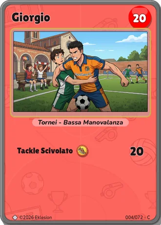
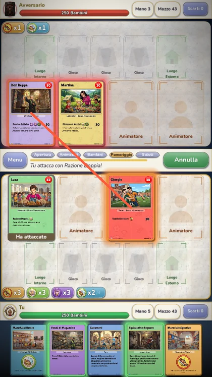
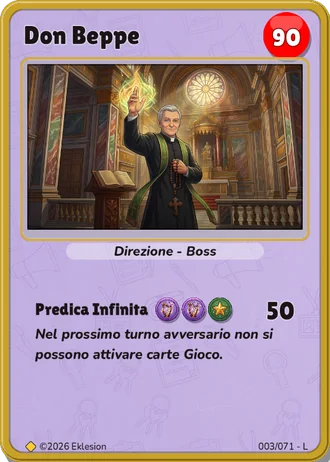
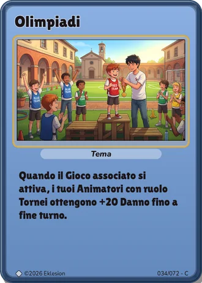
In Eklesion ogni giocatore guida il proprio oratorio. Vince chi tiene aperto il cancello: quando i Bambini di un oratorio arrivano a zero, quell'oratorio chiude.
Apri le buste, completa la collezione e costruisci mazzi da 50 carte: Animatori, Giochi, Luoghi, Temi e Imprevisti. Ogni carta è illustrata (con l'aiuto dell'intelligenza artificiale) e racconta un pezzetto di vita d'oratorio.
Ogni turno ha cinque fasi. Scegli quando schierare gli Animatori, quali Materiali posare, quando attaccare e quando tenere pronto un Imprevisto. Pochi minuti per partita, tanta strategia.
Aggiungi gli amici con un codice QR, sfidali, scambia le carte doppie e passa i tuoi mazzi. Partecipa ai tornei a tabellone organizzati in oratorio.
Ogni turno è una giornata: si apre l'oratorio, arrivano gli Animatori e i Bambini, si gioca il pomeriggio e poi si saluta.
Pesca una carta e raddrizza i Materiali: tornano tutti disponibili.
Schieri i nuovi Animatori nei quattro spazi del campo.
Posi fino a due Materiali nel Magazzino: sono il carburante degli attacchi.
Il cuore del turno: costruisci Luoghi, posa e attiva Giochi, usa un Imprevisto e attacca.
Fine del turno: tocca all'avversario.
Dal Magazziniere che sa dove sta ogni cosa a Don Beppe e al suo mazzo di prediche infinite: ogni Animatore ha la sua carica, il suo ruolo e il suo modo di giocare.
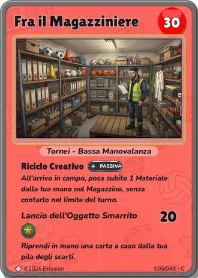
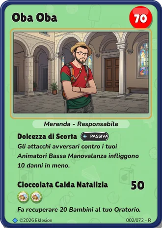
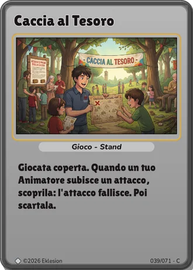
Un anno d'oratorio, un giorno alla volta: dodici capitoli, da «Si riparte!» di ottobre alla festa finale di settembre. Una battaglia al giorno, con avversari e regole speciali.
Scala la gerarchia dell'oratorio, da Bambino a Don. Stagioni mensili, classifica e compiti settimanali.
Quattro livelli di difficoltà contro il computer, con consigli di un coach a fine partita. Perfetto per imparare.
Sfida un amico con un codice, oppure iscriviti ai tornei a tabellone organizzati dagli animatori.
Il gioco simula centinaia di partite per dirti quanto vale il tuo mazzo e quali carte non servono.
Una busta gratuita ogni 12 ore, missioni giornaliere e settimanali, medaglie da spendere in cornici e titoli.
Trascina le carte, tocca per ispezionarle, gioca con una mano sola.
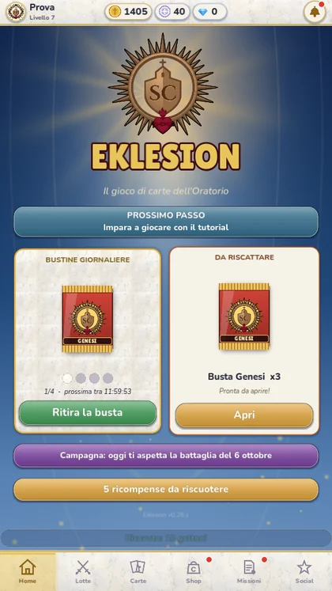
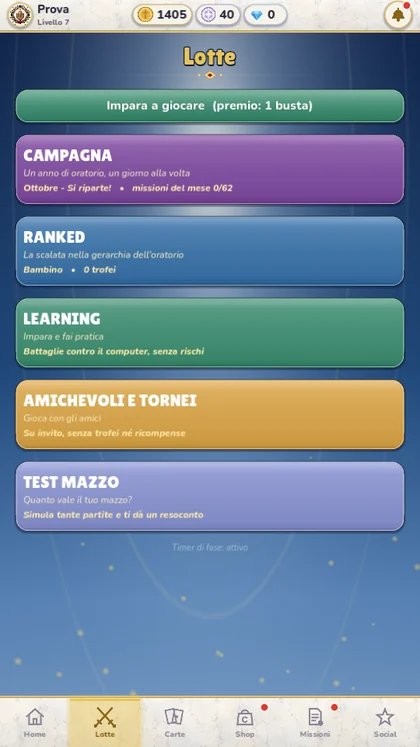
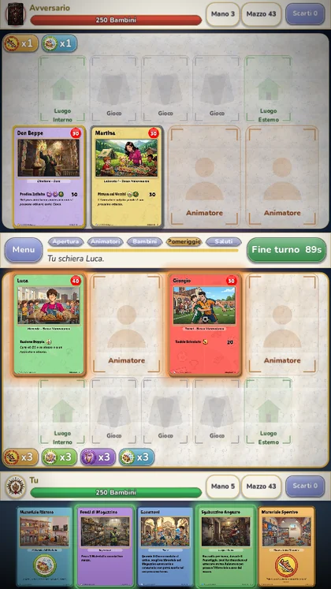
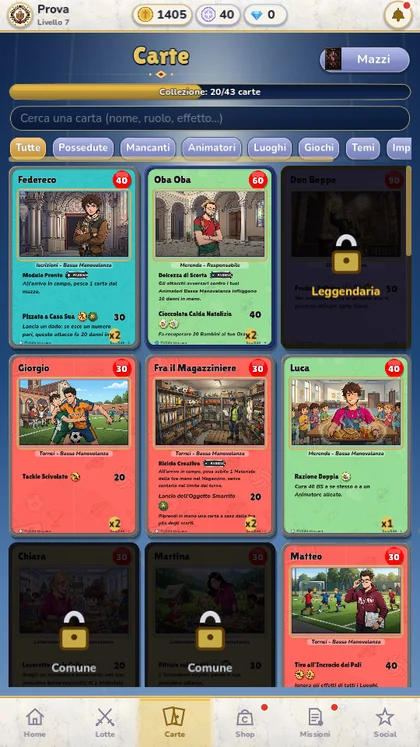
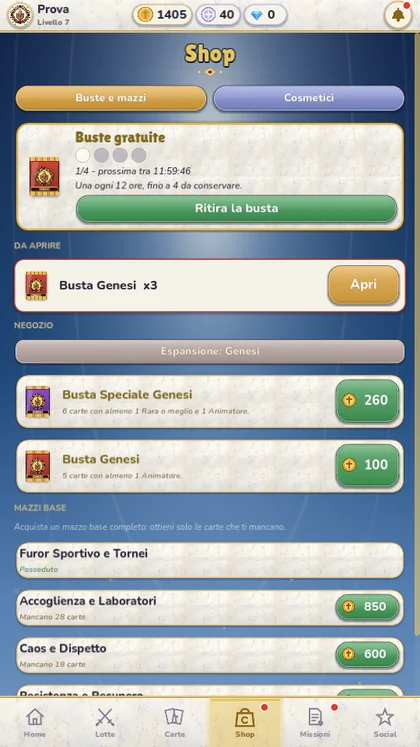
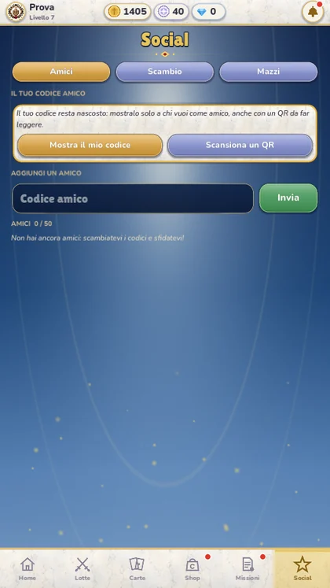
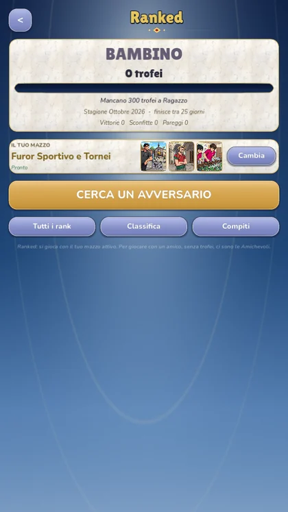
Scarica Eklesion per Android o per Windows: la guida all'installazione ti porta dentro in pochi minuti.